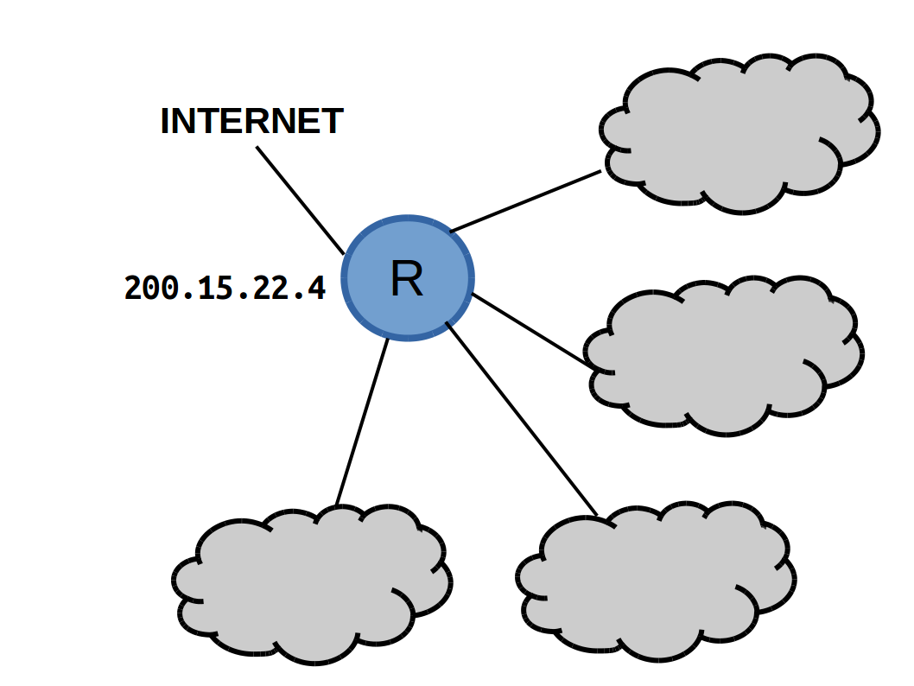

Se uma máscara de subrede possui o valor 255.255.255.255, para um endereço classe C, então será possÃvel descrever quantas subredes e estações em cada subrede, respectivamente?
- 256 subredes e nenhuma estação
- 1 subrede e 256-2 estações
- o mesmo número de rede e estações providos pelo endereço na sua classe.
- 64 subredes e 64 estação
Conforme mostra a figura, um administrador de rede recebeu o endereço IP 200.15.22.4 do respectivo provedor de acesso e ele precisa organizar internamente a sua rede em 4 subredes. Quais endereços de rede e máscaras são compatÃveis com a necessidade do administrador?

- 10.0.0.0/10
- 200.15.22.0/26
- 200.15.22.0/24
- 200.15.0.0/18
- 200.15.0.0/26
- 10.0.0.0/26
Qual(is) máscara(s) permitiria(m) que os endereços IP 130.88.176.64 e 130.88.160.175 fizessem parte da mesma subrede, sabendo que dec(175)=bin(10101111), dec(176)=bin(10110010), dec(64)=bin(10000000) e dec(160)=bin(10100000)?
- /16, /17, /18 ou /19
- /17, /18 ou /19
- /18
- /19
- /20
- /24